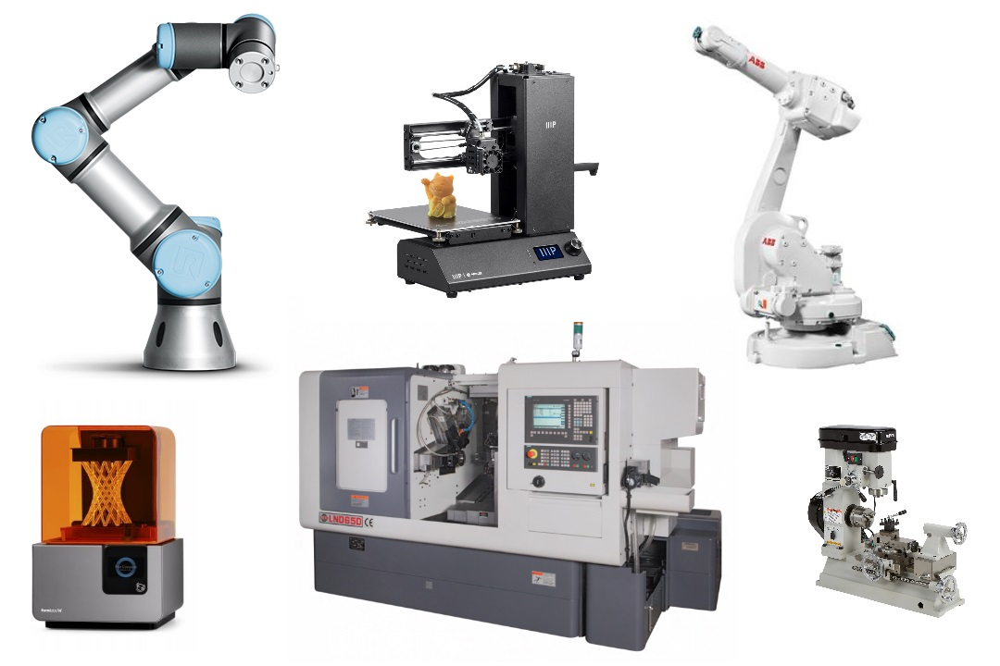
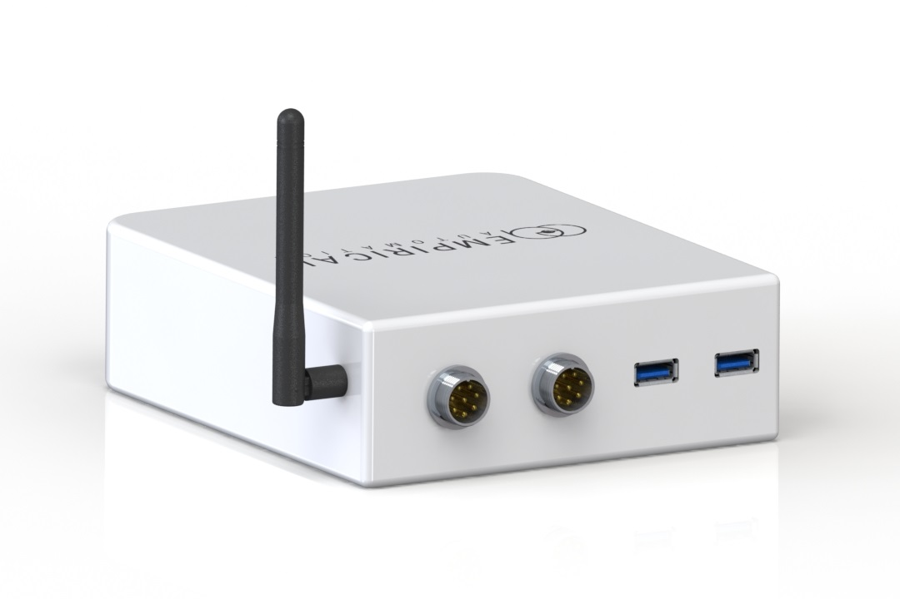
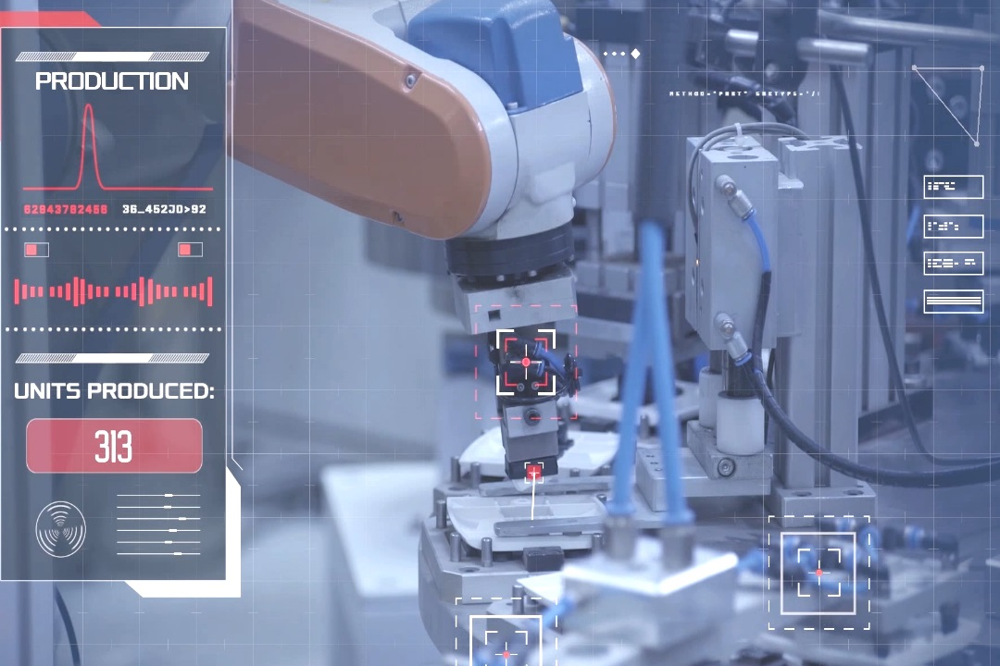

Loading...
The Empirical Eye is a smart module that attaches to your machines
giving you unprecented control and monitoring capabilities.
Empirical Eye
The Empirical Eye is a smart module that attaches to your machines, giving you first-person remote control and monitoring capabilities.
And the best part - you can try it for free!
And the best part - you can try it for free!
A smart device that fits in your hand, and attaches to your robots, 3D printers, CNC machines, and more. The Empirical Eye brings your physical assets online, so you can easily log into them to monitor their production status, show clients, and remote control operate them yourself.
Give your company the flexibility of remote work for physical machines. Work with automation experts from around the world. Don't ever wonder about machine status when you're out of the office.
Smart and Practical Automation for Your Business.
The Empirical Eye enables you to accelerate automation through
flexibility, affordability, and software intelligence.
flexibility, affordability, and software intelligence.

Flexibility
Monitor and show off your machines from anywhere. Remote control them too: jump into the driver's seat to troubleshoot problems, or just 'show and record' the machine what to do. Empirical Eye works with a variety of robot arms, 3D printers, CNC machines, and more.
Affordability
The Empirical Eye device is FREE and is easily attached to your machines. We provide value-added software on top of the Empirical Eye platform. The upcoming "Remote Worker Marketplace" creates a marketplace for talented affordable labor to work your machines remotely.